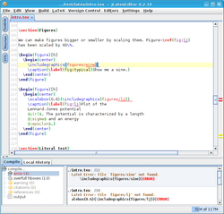

JLatexEditor
Dieser Artikel wurde für die folgenden Ubuntu-Versionen getestet:
Ubuntu 14.04 Trusty Tahr
Zum Verständnis dieses Artikels sind folgende Seiten hilfreich:

JLatexEditor  ist ein freier, in Java geschriebener LaTeX-Editor, der viele hilfreiche Funktionen für Programmierer bietet. Neben der Möglichkeit zum Refactoring, zur Code-/Text-Vervollständigung und der schnellen Navigation im LaTeX-Code, unterstützt der Editor Live-Templates , die es erlauben, Code-Kürzel (z.B.
ist ein freier, in Java geschriebener LaTeX-Editor, der viele hilfreiche Funktionen für Programmierer bietet. Neben der Möglichkeit zum Refactoring, zur Code-/Text-Vervollständigung und der schnellen Navigation im LaTeX-Code, unterstützt der Editor Live-Templates , die es erlauben, Code-Kürzel (z.B. fig für figure-Umgebung) schnell durch entsprechenden, umfangreichen LaTeX-Code zu ersetzen.
Weitere Funktionen:
Rechtschreibprüfung
Übersetzung des LaTeX-Dokuments in: DVI, PS, PDF
Kategorisierte Fehleranzeige (Fehler, Warnungen, überfüllte hboxes, etc.)
Versionskontrolle mit Subversion (SVN) und lokaler Versionshistorie (Diff)
Syntaxhervorhebung
Hilfe zu LaTeX-Befehlen
Voraussetzungen¶
JLatexEditor basiert auf Java. Wie man eine Laufzeitumgebung (JRE, ab Version 6) installiert, ist im Artikel Java/Installation beschrieben. Außerdem muss TeX Live installiert sein.
Installation¶
Das Programm ist nicht Bestandteil der offiziellen Paketquellen.
Fremdquelle¶
Um aus der Fremdquelle zu installieren, muss man die folgenden Paketquellen freischalten:
Hinweis!
Zusätzliche Fremdquellen können das System gefährden.
deb http://apt.endrullis.de/ VERSION main
Um die Fremdquelle zu authentifizieren, kann man
entweder den Signierungsschlüssel herunterladen  und in der Paketverwaltung hinzufügen oder folgenden Befehl ausführen:
und in der Paketverwaltung hinzufügen oder folgenden Befehl ausführen:
wget -q http://apt.endrullis.de/public.gpg -O- | sudo apt-key add -
Nach dem Freischalten und Aktualisieren der Paketquelle kann das folgende Paket installiert [2] werden:
jlatexeditor (Fremdquelle)
 mit apturl
mit apturl
Paketliste zum Kopieren:
sudo apt-get install jlatexeditor
sudo aptitude install jlatexeditor
Des Weiteren können die folgenden zusätzlichen Pakete installiert werden:
subversion - SVN-Integration
aspell oder hunspell - Rechtschreibkontrolle
Fremdpaket¶
Die Entwickler stellen die letzte stabile Version des Editors auch als Fremdpaket zur Verfügung: jLatexeditor-latest.deb . Dieses kann heruntergeladen und manuell installiert werden [2].
Hinweis!
Fremdpakete können das System gefährden.
Manuelle Installation auf Basis des Quellcodes¶
Der Vorteil der Quellcode-Version ist, dass man stets mit den neusten Features arbeiten kann (Bleeding Edge), der Nachteil jedoch, dass diese Version nicht immer stabil sein muss. Bug-Reports können auf der Herstellerseite verfasst werden.
Zunächst muss der Quellcode des Projektes per Subversion ausgecheckt werden [5]:
svn co https://jle.cc/svn/JLatexEditor/trunk JLatexEditor
Anschließend kann man das Programm per
ant runJLatexEditor
übersetzen und starten.
Weiterhin werden zwei Start-Skripte zur Verfügung gestellt (start.sh und startDebug.sh), die die Aktualisierung des Quellcodes und den Start der Anwendung automatisieren. startDebug.sh startet den Editor dabei im Hintergrund und leitet die Konsolen-Ausgabe in ein debug.log und ein error.log um, während start.sh die Ausgabe einfach auf der Konsole ausgibt.
Verwendung¶
Zum Start des Programms ruft man das Skript jlatexeditor [4] im Installationsverzeichnis auf.
Vorwärts- und Inverssuche¶
Die Vorwärtssuche und inverse Suche (auch Rückwärtssuche genannt) bezeichnet die Möglichkeit, die Cursor-Position im LaTeX-Editor mit einem Dokumentenbetrachter zu synchronisieren und umgekehrt. Der JLatexEditor beherrscht dabei beide Richtungen. Zu beachten ist, dass nicht alle Dokumentenbetrachter diese Art der Synchronisation mit LaTeX-Editoren unterstützten. Zum Teil ist die Unterstützung auf DVI-Dateien beschränkt. Einige moderne Betrachter unterstützten mittlerweile auch SyncTeX zur Synchronisation von PDF-Dateien. Hierzu zählt unter Ubuntu beispielsweise Okular (> 0.11.1).
Die Vorwärtssuche wird im Editor eingerichtet. Unter "Settings -> Forward Search" lässt sich für einige bekannte Dokumentenbetrachter die Vorwärtssuche schnell und einfach aktivieren. Sollte der gewünschte Dokumentenbetrachter dort nicht aufgeführt sein, muss man die Kommandozeile zur Synchronisation mit dem Dokumentenbetrachter in den Einstellungen ("Settings -> Global Settings") unter dem Punkt forward\ search.viewer per Hand festlegen. Hinweise zur entsprechenden Kommandozeile finden man in der Regel in der Dokumentation des Dokumentenbetrachters oder in entsprechenden Foren. In der Kommandozeile können folgende Platzhalter verwendet werden:
%file- Verweist auf den Dateinamen des Master-Dokumentes (ohne Erweiterung, d.h.%file.pdfzeigt auf die von LaTeX erzeugte PDF-Datei)%texfile- Verweist auf die aktuell in Bearbeitung befindliche tex-Datei (mit Erweiterung)%line- Verweist auf die aktuelle Zeilennummer im Editor
Die Einrichtung der inversen Suche erfolgt im Dokumentenbetrachter. Die Einstellung ist abhängig vom jeweiligen Editor. Auf der Projektseite findet man entsprechende Einrichtungs-Anleitungen für bekannte Dokumentenbetrachter.
Tastenkürzel¶
Standard-Tastenkürzel¶
| Tastenkürzel | |||
| Taste(n) | Bedeutung | Taste(n) | Bedeutung |
| Strg + Y | Löscht aktuelle Zeile | Strg + U | Löscht alles vor dem Cursor |
| Strg + K | Löscht alles nach dem Cursor | Strg + X | Ausschneiden (markierter Text oder aktuelle Zeile) |
| Strg + D | Zeile(n) in Kommentare wandeln ("%" vor Zeile setzen) | Strg + ⇧ + D | Kommentar-Zeichen vor Zeile(n) entfernen |
| Alt + D | Diff zu einer anderen Datei ermitteln (um gegebenenfalls Änderungen rückgängig zu machen oder zu übernehmen) | Alt + Y | Symbol-Liste anzeigen / verstecken |
| Alt + X | Dokumentenstruktur anzeigen / verstecken | Alt + L | LaTeX-Compiler-Ausgabe anzeigen / verstecken |
| Alt + 1 | PDF erzeugen | Alt + 2 | DVI erzeugen |
| Alt + 3 | DVI und PS erzeugen | Alt + 4 | DVI, PS und PDF erzeugen |
| Strg + ⇧ + F | Vorwärtssuche durchführen (PDF-Viewer (bzw. DVI- oder PS-Viewer) springt an die Stelle im Dokument, wo sich der Latex-Editor gerade befindet) | F2 | Element unter dem Cursor (LaTeX-Befehl, LaTeX-Umgebung, BibTex-Schlüssel oder Label) umbenennen |
| Strg + Alt + E | Aktuelle LaTeX-Umgebung schließen | Strg + Alt + R | Spalten in Tabelle neu anordnen ("Mache Hübsch"-Kommando) |
| Alt + U | SVN Update | Alt + C | SVN Commit |
| Alt + ← | zu linkem Tab wechseln | Alt + → | zu rechtem Tab wechseln |
| Strg + Alt + ← | Tab im Tab-Leiste nach links bewegen | Strg + Alt + → | Tab im Tab-Leiste nach rechts bewegen |
| Strg + Alt + S | Globale Einstellungen öffnen | ||
Spezielle Tastenkürzel¶
| Tastenkürzel | |
| Taste(n) | Bedeutung |
| Strg + Q | Öffnet eine Hilfe zum LaTeX-Befehl unter dem Cursor |
| Strg + | Vervollständigt Wörter, LaTeX-Befehle, Label, bibliografische Einträge und Dateinamen (in Abhängigkeit vom aktuellen LaTeX-Befehl) |
| Alt + ⏎ | Dient der Rechtschreibkontrolle: Öffnet eine Liste von Korrekturvorschlägen zum Wort unter dem Cursor |
| Tab ⇆ | Entfaltet Live-Templates (Cursor muss sich hinter dem Namen des Templates befinden) |
| Tab ⇆ | Rückt die markierte Zeilen ein |
| ⇧ + Tab ⇆ | Entfernt die Einrückung der markierten Zeilen |
| Strg + B | Springt zum Element unter dem Cursor (zu einer Datei oder zur Definition eines LaTeX-Befehls oder Labels) |
| Alt + ↑ | Springt zur vorherigen Änderung im Diff |
| Alt + ↓ | Springt zur nächsten Änderung im Diff |
 Programmübersicht
Programmübersicht- Erstellt mit Inyoka
-
 2004 – 2017 ubuntuusers.de • Einige Rechte vorbehalten
2004 – 2017 ubuntuusers.de • Einige Rechte vorbehalten
Lizenz • Kontakt • Datenschutz • Impressum • Serverstatus -
Serverhousing gespendet von